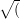
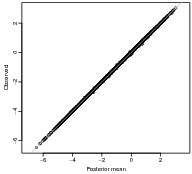
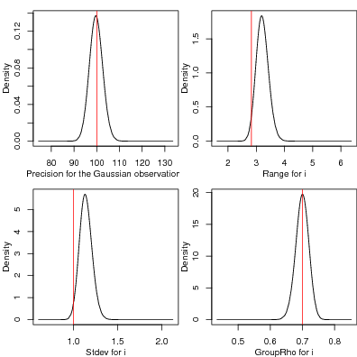
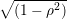
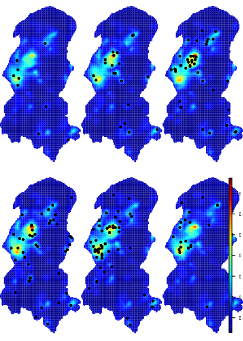
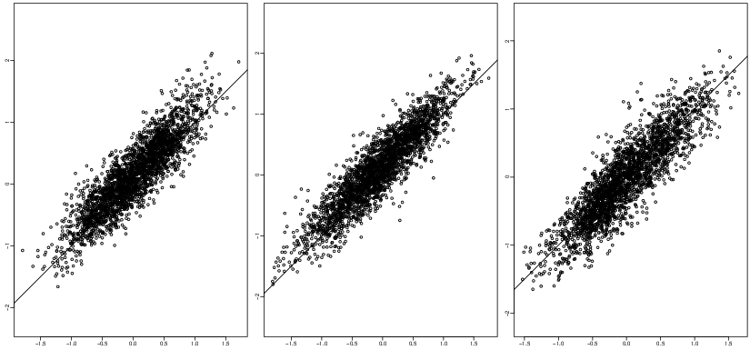
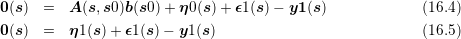
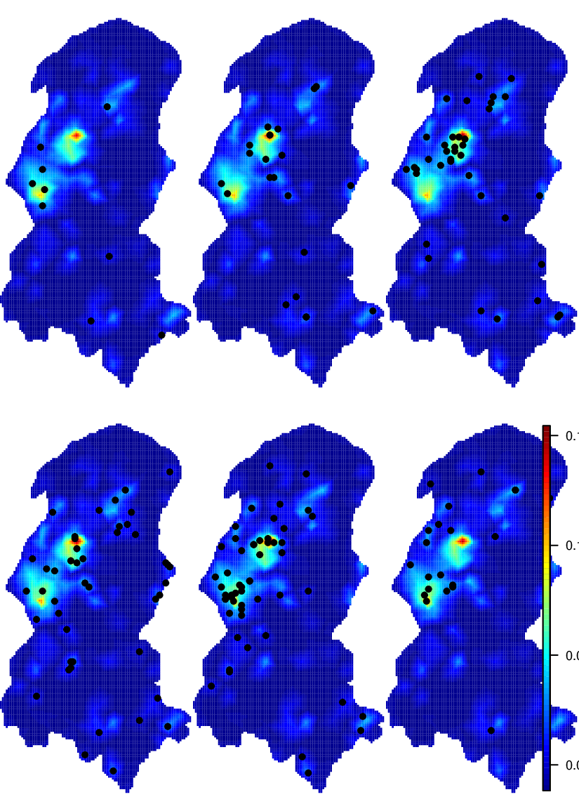
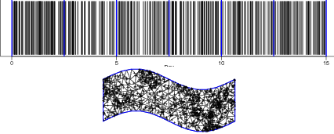
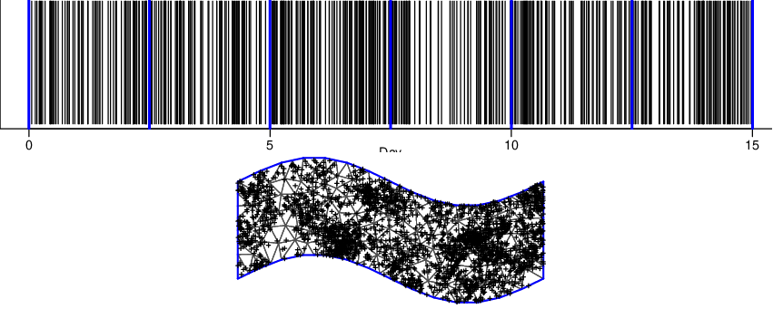

Figure 5.5: Marginal posterior distribution for the intercept, likelihood precision and the
parameters in the space-time process.
The R source for this file is available at http://www.math.ntnu.no/inla/r-_inla.org/tutorials/spde/R/spde-_tutorial-_spacetime.R
In this chapter we show an example on fitting a space-time model. This model is a separable one described on [Cameletti et al., 2012]. Basically the model is defined as a SPDE model for the spatial domain and an AR(1) model for the time dimention. The space-time separable model is defined by the kronecker product between the precision of these two models.
We provide two examples, one for discrete time domain and another when the time is discretized over a set of knots. Basically the difference appears only in the simulation process, wich is not that important. The main difference in the fitting process is that in the continuous time case we have to select time knots and build the projector matrix considering it. However, both cases allows to have different locations at different times.
In this section we show how to fit a space-time separable model, as in [Cameletti et al., 2012]. Additionally, we show the use of a categorical covariate.
We use the Paraná state border, available on INLA package, as the domain.
We start by defining the spatial model. Because we need that the example run faster, we use the low resolution mesh for Paraná state border created in Section 1.3.
There is two options to simulate from Cameletti’s model. One is based on the marginal distribution of the latent field and another is on the conditional distribution at each time. This last option is easy as we can simulate one realization of a spatial random field for each time.
First we set k = 12, the time dimention
and consider the location points from the PRprec data in a random order
In the following simulation step we will use the rspde() function available in the file at http://www.math.ntnu.no/inla/r-_inla.org/tutorials/spde/R/spde-_tutorial-_functions.R.
The k independent realizations can be done by
Now, we define the autoregressive parameter ρ
and get the correlated sample over time using
where the 1 - ρ2) term is added as we would like to consider that the innovation noise follows the stationary distribution, see [Rue and Held, 2005] and [Cameletti et al., 2012].
We can visualize the realization at the figure 5.1.1 with commands bellow
In this example we need to show the use of a categorical covariate. First we do the simulation of the covariate as
and the regression parameters as
The response is
To show that is allowed to have different locations on different times, we drop some of the observations. We do it by just selecting a half of the simulated data. We do it by creating a index for the selected observations
and we organize the data on a data.frame
In real applications some times we have completely missaligned locations between different times. The code provided here to fit the model still work on this situation.
Defining the SPDE model considering the PC-prior derived in [Fuglstad et al., 2017] for the model parameters as the practical range, ∕κ, and the marginal standard deviation.
Now, we need the data preparation to build the space-time model. The index set is made taking into account the number of weights on the SPDE model and the number of groups
Notice that the index set for the latent field is not depending on the data set locations. It only depends on the SPDE model size and on the time dimention.
The projector matrix must be defined considering the coordinates of the observed data. We have to inform the time index for the group to build the projector matrix. This also must be defined on the inla.spde.make.A() function
The effects on the stack are a list with two elements, one is the index set and another the categorical covariate. The stack data is defined as
We set the PC-prior for the temporal autoregressive parameter with P(cor > 0) = 0.9
The likelihood hyperparameter is fixed on a hight precision, just because we haven’t noise. To deal with the categorical covariate we need to set expand.factor.strategy='inla' on the control.fixed argument list.
Summary for the trhee intercepts (and the observed mean for each covariate level)
Look a the posterior marginal distributions for the random field parameters and the marginal ditribution for the temporal correlation, on the Figure 5.1.3 with the commands bellow

The first look at the random field posterior distribution is to compare the realized random field with the posterior mean, median or/and mode and any quantile.
First, we found the index for the random field at data locations
The correlation between the simulated data response and the posterior mean of the predicted values (there is no error term in the model):
We also can do prediction for each time and visualize it. First, we define the grid in the same way as in the rainfall example in Section 2.1.
The prediction for each time can be done by
We found what points of the grid are inside the Paraná state border.
To plot, we set NA to the points of the grid out of the Paraná border.
The visualization at Figure 5.1.4 can be made by the comands bellow
The results on previous section are done using part of the simulated data. This part of the simulated data is now used as a validation data. So, we prepare another data stack to compute posterior distributions to this part of the data:
Now, we just use a full data stack to fit the model and consider the hyperparameters values fitted before
We can plot the predicted versus observed values to look at goodness of fit. First, we found the index for this data from full stack data.
We plot it with following commands and visualize at Figure 5.1.5.
We now suppose that we have that the observations are not collected over discrete time points. This is the case for fishing data and space-time point process in general. Similar to the Finite Method approach for the space, we can use piecewise linear basis function at a set of time knots, as we have in some other spacetime examples.
We now sample some locations over space and time points as well.
To sample from the model, we define a space-time separable covariance function, which is Matérn in space and Exponential over time:
and use it to sample from the model
To fit the space-time continuous model we need to determine the time knots and the temporal mesh
Consider the the low resolution mesh for Paraná state border created in Section 1.3, used in the previous example and the SPDE model also defined in the previous example.
Building the index set
The projector matrix consider the spatial and time projection. So, it needs the spatial mesh and the spatial locations, the time points and the temporal mesh
The effects on the stack are a list with two elements, one is the index set and another the categorical covariate. The stack data is defined as
We used an Exponential correlation function for time with parameter κ as the inverse range parameter. It gives a correlation between time knots equals to
Fitting the model considering a AR1 temporal correlation over the time knots
Look at the summary of the posterior marginal distributions for the likelihood precision and the random field parameters:
These distributions are showed in Figure 5.2.3, as well also the marginal ditribution for the intercept, error precision, spatial range, standard deviation and temporal correlation in the spacetime field with the commands bellow
The R source for this file is available at http://www.math.ntnu.no/inla/r-_inla.org/tutorials/spde/R/spde-_tutorial-_lower-_spatio-_temporal.R
It can be challenging when dealing with large data sets. In this chapter we want to show how to fit a model using some dimention reduction.
Before starting, the spatial mesh and the SPDE model is built with the following code.
The data we are going to analyse is the daily rainfall in Paraná. We have rainfall at 616 location points observed over 365 days.
To this example we are going to analyse the probability of rain. So we only consider if the value where bigger than 0.1 or not.
To reduce the time dimension of the data, we aggregate it summing every five days. At end we have two data matrix, one with the number of days without NA in each station and another with the number of raining days on such stations.
From now, our data has 73 time points.
From the above table, we can see that there were 3563 periods of five days with no data recorded. The first approach can be removing such pairs data, both y and n. If we do not remove it, we have to assign NA to y when n = 0. However, we have to assign a positive value, five for example, for such n and it will be treated as a prediction scenario.
This approach can be seen from the template code in Section 3.2 of [Lindgren and Rue, 2015] and was also considered in the last example of the INLA book, [Blangiardo and Cameletti, 2015]. The main idea is to place some knots over the time window and define the model on such knots. Them define the projection from the time knots as we do for the spatial case with the mesh.
We choose to place knots at each 6 time points of the temporally aggregated data, which has 73 time points. So, we en up with only 12 knots over time.
The fist knot is closer to 7 time blocks and the others to 6.
The model dimention is then
To built the spatial projector matrix, we need to replicate the spatial coordinates as
and then to consider the temporal mesh considering the group index in the scale of the data to be analised.
The index set and the stack is built as usual
The formula is also as the usual for the separable spatio temporal model
To "fit" the model as fast as possible, we use the ’gaussian’ approximation and the Empirical Bayes (’eb’) integration strategy over the hyperparameters. We also fixed the mode at the values we have find in previous analisys.
We can plot the fitted spatial effect for each temporal knot and overlay the proportion raining days considering the data closest to the time knots.
Defining a grid to project
Project the posterior mean fitted at each time knot
The images in Figure 5.3.2 were made using the following commands
The R source for this file is available at http://www.math.ntnu.no/inla/r-_inla.org/tutorials/spde/R/spde-_tutorial-_stcoregionalization.R
## Loading required package: sp
## Loading required package: Matrix
## This is INLA_17.07.20-1 built 2017-07-20 20:57:50 UTC.
## See www.r-inla.org/contact-us for how to get help.
In this Chapter we present a way to fit a spacetime version of the Bayesian spatial coregionalization model proposed by [Schimdt and Gelfand, 2003]. Because we do the modeling with SPDE that consider the model on a mesh and it can be considered projections for other points in the spacetime domain. This is an important point as we can have the outcomes measured at different points in space and time. The only need is to have the data in the same spacetime domain.
WARNING: a crude mesh and empirical Bayes is used in order to run this example in a short time.
The case of three outcomes is defined considering the following equations
where the zk(s,t) are spacetime correlated processes and ek(s,t) are uncorrelated error terms, k = 1,2,3.
In order to fit this model in R-INLA we consider a reparametrization. This reparametrization is to change the second equation as follows
![y3(s,t) = α3 + λ2(α2 + λ1α1) + λ2λ1[z1(s,t)+ e1(s,t)]+ λ3{α2 + λ1 α1 + λ1[z1(s,t) + e1(s,t)]+ z2(s,t) + e2(s,t)}+ z3(s,t)
= [α3 + λ2α1 + λ3(α2 + λ1 α1)]+ (5.1)
(λ + λ λ )[z(s,t)+ e (s,t)]+ λ [z (s,t)+ e (s,t)]+ z (s,t)+ e (s,t)
2 3 1 1 1 3 2 2 3 3](spde-tutorial98x.png)
This model can be fitted in R-INLA using the copy feature. In the parametrization above it is needed to copy the linear predictor in the first equation to the second and the linear predictor in the second equation to the third.
We will use the copy feature to fit λ1 = β1. In the second equation and λ2 + λ3λ1 = β2 will be the first copy parameter in the third equation. A second copy will be used in the third equation to fit λ3 = β3.
Parameter setting
When working with SPDE models is not required for the spatial locations to be the same for each process to fit this model in R-INLA, as shown in the Chapter 8 of [Blangiardo and Cameletti, 2015] and in the measurement error example in Section 3.1. As we define the model over a set of time knots to fit a spacetime continuous random field, it is also not required for the spacetime coordinates from each outcome to be the same. However, to simplify the code, we just use the same spatial locations and the same time points for all three processes.
We can use the rMatern() function defined in the section 1.1.4 to simulate independent random field realizations for each time. This function is available in the file at http://www.math.ntnu.no/inla/r-_inla.org/tutorials/spde/R/spde-_tutorial-_functions.R
The time evolution will follows an autoregressive first order process as we used in Chapter 5.
The term  is because we are sampling from the stationary distribution, and is in accord to the first order autoregressive process parametrization implemented in R-INLA.
Then we define the observation samples
Build the mesh to use in the fitting process (this is a crude mesh used here for short computational time pourpose)
Defining the SPDE model considering the PC-prior derived in [Fuglstad et al., 2017] for the model parameters as the practical range, ∕κ, and the marginal standard deviation.
Defining all the index set for the space-time fields and the for the copies. As we have the same mesh, they are the same.
Prior for ρj is chosen as the Penalized Complexity prior, [Simspon et al., 2017]
Ther prior chosen above consider P(ρ > 0) = 0.9.
Priors for each of the the copy parameters N(0,10)
Define the formula including all the terms in the model.
Define the projector matrix (all they are equal in this example, but it can be different)
Organize the data in three data stack and join it
We consider a penalized complexity prior for the errors precision, [Simspon et al., 2017],
We have 15 hyperparameters in the model. To make the optimization process fast, we use the parameter values used in the simulation as the initial values
With 15 hyperparameters in the model and the CCD strategy will use 287 integration points to compute
## Note: method with signature ’Matrix#numLike’ chosen for function ’%*%’,
## target signature ’dgTMatrix#numeric’.
## "TsparseMatrix#ANY" would also be valid
## Note: method with signature ’sparseMatrix#matrix’ chosen for function
’%*%’,
## target signature ’dgTMatrix#matrix’.
## "TsparseMatrix#ANY" would also be valid
Summary of the posterior marginal density for the intercepts
Posterior marginal for the errors precision
Summary of the posterior marginal density for the temporal correlations:
Summary of the posterior marginal density for the copy parameters:
Look for the random field parameters for each field. The practical range for each random field
The standard deviation for each random field
The posterior mean for each random field is projected to the observation locations and shown against the simulated correspondent fields in Figure 5.4.3 with the code bellow.
Remember that the crude approximation for the covariance and the simplifications on the inference procedure is not recommended to use in practice. It can be considered for having initial results. Even thou, it seems that the method was reazonable well having covered the parameter values used to simulate the data.
The R source for this file is available at http://www.math.ntnu.no/inla/r-_inla.org/tutorials/spde/R/spde-_tutorial-_dynamic.R
There is a large literature about dynamic models with also some books about it, from [West and Harrison, 1997] to [Petris et al., 2009]. These models basically defines an hierarchical framework for a class of time series models. A particular case is the dynamic regression model, were the regression coefficients are modeled as time series. That is the case when the regression coefficients vary smoothly over time.
The specific class of models for spatially structured time series was proposed by [Gelfand et al., 2003], where the regression coefficients varies smoothly over time and space. For the areal data case, the use of proper Gaussian Markov random fields (PGMRF) over space as proposed by [Vivar and Ferreira, 2009]. There exists a particular class of such models called “spatially varying coefficient models” were the regression coefficients veries over space, [Assunção et al., 1999], [Assunção et al., 2002], [Gamerman et al., 2003].
In [Gelfand et al., 2003] the Gibbs sampler were used for inference and it was claimed that better algorithms is needed due to strong autocorrelations. In [Vivar and Ferreira, 2009] the use of forward information filtering and backward sampling (FIFBS) recursions were proposed. Both MCMC algorithms are computationally expensive.
One can avoid the FFBS algorithm as a relation between the Kalman-filter and the Cholesky factorization is provided in [Knorr-Held and Rue, 2002]. The Cholesky fator is more general and has superior performance when using sparse matrix methods, [Rue and Held, 2005, p. 149]. Additionally, the restriction that the prior for the latent field has to be proper can be avoided.
When the likelihood is Gaussian, there is no approximation needed in the inference process since the distribution of the latent field given the data and the hyperparameters is Gaussian. So, the main task is to perform inference for the hyperparameters in the model. For this, the mode and curvature around can be found without any sampling method. For the class of models in [Vivar and Ferreira, 2009] it is natural to use INLA, as shown in [Ruiz-Cárdenas et al., 2012], and for the models in [Gelfand et al., 2003] we can use the SPDE approach when considering the Matérn covariance for the spatial part.
In this example we will show how to fit the space-time dynamic regression model as in [Gelfand et al., 2003], considering the Matérn spatial covariance and the AR(1) model for time which corresponds to the exponential correlation function. This particular covariance choise correspond to the model in [?], where only the intercept is dynamic. Here, we show the case when we have a dynamic intercept and a dynamic regression coefficient for an harmonic over time.
We can start on defining the spatial locations:
To sample from a random field on a set of location, we can use the rMatern() function defined in the Section 1.1.4 to simulate independent random field realizations for each time. This function is available in the file at http://www.math.ntnu.no/inla/r-_inla.org/tutorials/spde/R/spde-_tutorial-_functions.R
We draw k (number of time points) samples from the random field. Then, we make it temporally correlated considering the time autoregression
where the (1 - ρj2) term is in accord to the parametrization of the AR(1) model in INLA.
To get the response, we define the harmonic as a function over time, compute the mean and add an error term
We have two space-time terms on the model, each one with three hyperparameters: precision, spatial scale, temporal scale (or temporal correlation). So, considering the likelihood, 7 hyperparameters in total. To perform fast inference, we choose to have a crude mesh with with small number of vertices.
Defining the SPDE model considering the PC-prior derived in [Fuglstad et al., 2017] for the model parameters as the practical range, ∕κ, and the marginal standard deviation.
We do need one set of index for each call of the f() function, no matter if they are the same, so:
In the SPDE approach, the space-time model is defined in a set of mesh nodes. As we have considered continuous time, it is also defined on a set of time knots. So, we have to deal with the projection from the model domain (nodes, knots) to the space-time data locations. For the intercept it is the same way as in the other examples. For the regression coefficients, all we need to multiply the projector matrix by the covariate vector columnwie, i. e., each column of the projector matrix is multiplyed by the covariate vector. It can be seen from the following
where A⊕ (h1′) is the row-wise Kronecker product between A and a the vector h (with length equal the number of rows in A) expressed as the Kronecker sum of A and h11. This operation can be performed usind the inla.row.kron() function and is done internally in the function inla.spde.make.A() when supplying a vector in the weights argument.The space-time projector matrix A is defined as follows:
The data stack is as follows
where i0 is similar to i1 and the elements mu1 and h in the second element of the effects data.frame is for μξ.
The formula take these things into account
As we have Gaussian likelihood there is no approximation in the fitting process. The first step of the INLA algorithm is the optimization to find the mode of the 7 hyperparameters in the model. By choosing good starting values it will be needed less iteractions in this optimization process. Below, we define starting values for the hyperparameters in the internal scale considering the values used to simute the data
This step takes around few minutes to fit, and with bigger tolerance value in inla.control, it will makes fewer posterior evaluations.
The integration step when using the CCD strategy, will integrates over 79 hyperparameter configurations, as we have 7 hyperparameters. However, in the following inla() call we avoid it.
Fitting the model considering the initial values defined above
Summary of the μβ:
Summary for the likelihood precision
We can see the posterior marginal distributions for the range and standard deviation for each spatio-temporal process in Figure 5.5.3.
We can have a look over the posterior mean of the dynamic coefficients. We compute the correlation between the simulated and the posterior mean ones by
In this example we show hot to fit a space-time point process using the burkitt dataset from the splancs R package. The R source for this file is available at http://www.math.ntnu.no/inla/r-_inla.org/tutorials/spde/R/spde-_tutorial-_burkitt.R
We use the burkitt data set from the splancs package.
The folowing commands shows the time when each event occurred, Figure 5.6.
We have to define a set of knots over time in order to fit SPDE spatio temporal model. It is then used to built a temporal mesh
The spatial mesh can be done using the polygon of the region as a boundary. We can convert the domain polygon into a SpatialPolygons class with
and the use it as a boundary
Defining the SPDE model considering the PC-prior derived in [Fuglstad et al., 2017] for the model parameters as the practical range, ∕κ, and the marginal standard deviation.
The spatio temporal projection matrix is made considering both spatial and temporal locations and both spatial and temporal meshes.
Internally inla.spde.make.A function makes a row Kronecker product (see inla.row.kron) between the spatial projector matrix and the group (temporal in our case) projector one. This matrix has number of columns equals to the number of nodes in the mesh times the number of groups.
The index set is made considering the group feature:
The data stack can be made considering the ideas for the purerly spatial model. So, we do need to consider the expected number of cases at the 1) integration points and 2) data locations. For the integration points it is the spacetime volume computed for each mesh node and time knot, considering the spatial area of the dual mesh polygons, as in Chapter 4, times the the length of the time window at each time point. For the data locations it is zero as for a point the expectation is zero, in accord to the likelihood approximation proposed by [Simpson et al., 2016].
The dual mesh is extracted considering the function inla.mesh.dual(), available in http://www.math.ntnu.no/inla/r-_inla.org/tutorials/spde/R/spde-_tutorial-_functions.R
Them, we compute the intersection with each polygon from the mesh dual using the functions gIntersection() from the rgeos package (show the sum of the intersection polygons areas):
We can see that it sum up the same as the domain area:
The spatio temporal volume is the product of these values and the time window length of each time knot.
The data stack is built using
Model fitting (using the cruder approximation: ’gaussian’)
The exponential of the intercept plus the random effect at each spacetime integration point is the relative risk at each these points. This relative risk times the spacetime volume will give the expected number of points at each these spacetime locations. Summing it will approaches the number of observations:
We can plot the posterior marginal distributions for the intercept and parameters, in Figure 5.6, with
The projection over a grid for each time knot can be done with
The fitted latent field at each time knot is in Figure 5.6, produced with the code below. It can also be done for the standard deviation.
In this chapter we show how an approach to fit a spatio temporal log-Cox point process model for a large data sets. We are going to drawn samples from a separable space time intensity function. The R source for this file is available at http://www.math.ntnu.no/inla/r-_inla.org/tutorials/spde/R/spde-_tutorial-_stpp.R
First we define the spatial domain as follows
and convert it into the SpatialPolygons class
We choose to sample a dataset using the lgcp, [Taylor et al., 2013], package as follows
In order to fit the model, we do need to define a discretization over space and over time. For the time domain, we define a temporal mesh based on a number of time knots:
The spatial mesh is defined using the domain polygon:
We can have a look in Figure 5.7 to see a plot of a sample of the data over time, the time knots and over space and the spatial mesh as well with the commands below


For large datasets it can be computationally demanding to fit the model. The problem is because the dimention of the model would be n + m*k, where n is the number of data points, m is the number of nodes in the mesh, k is the number of time knots. In this section we choose to aggregate the data in a way that we have a problem with dimention 2 *m*k. So, this approach really makes sence when n >> m * k.
We choose to aggregate the data in accord to the integration points to make the fitting process easier. We also consider the dual mesh polygons, as shown in Chapter 4.
So, firt we find the Voronoi polygons for the mesh nodes
Convert it into SpatialPolygons:
Find to which polygon belongs each data point:
Fint to which part of the time mesh belongs each data point:
Use these both identification index sets to aggregate the data
We need to define the expected number of cases (at least) proportional to the area of the Polygons times the width length of the time knots. Compute the intersection area of each polygon with the domain (show the sum).
A summary of the polygons area is
and the area of the spatial domain is
The time length (domain) is 365 and the width of each knot is
where the knots at boundary are with less width than the internal ones.
Since the intensity function is the number of cases per volumn unit, with n cases the intensity varies around the average number of cases (intensity) by unit volumn
and this value is related to an intercept in the model we fit below. The space-time volumn (area unit per time unit) at each polygon and time knot is
The projector matrix, SPDE model object and the space-time index set definition:
Defining the data stack
the formula
and fitting the model
The log of the average intensity and the intercept summary:
The expected number of cases at each integration point can be used to compute the total expected number of cases
The spatial surface at each time knot can be computed by
and is visualized in Figure 5.7.2 is visualized by
